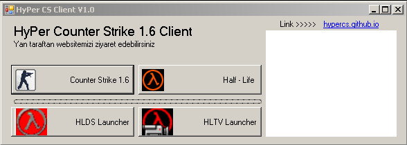
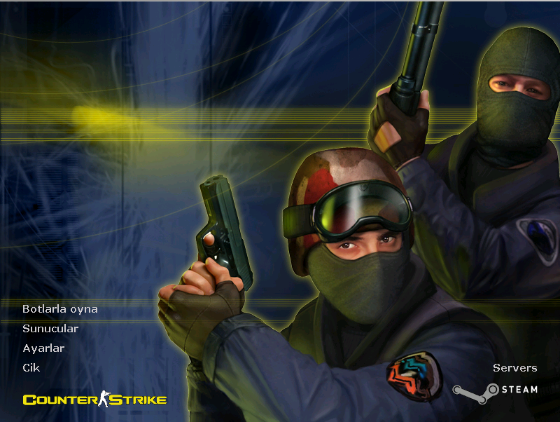
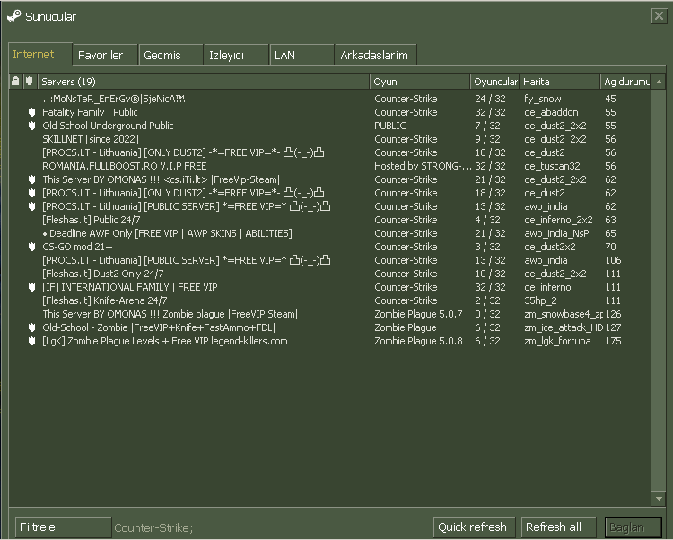
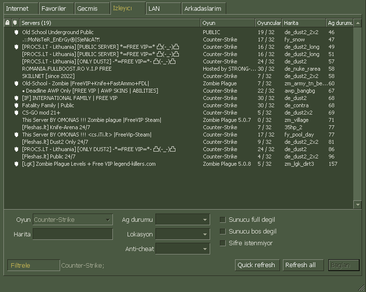

HyPer Counter Strike 1.6 - Half Life Client
Tamamen ücretsiz ve "NON-STEAM" bir "Counter Strike 1.6" client
- - - - - Client İçeriği - - - - -
Counter Strike 1.6

Half - Life

HLDS Launcher
HLTV Launcher
Kurulan
dosyalar arasında client tek bir uygulama halinde gelir. Açıldığında "Counter Strike 1.6", "Half - Life", "HLDS
Launcher", "HLTV Launcher" olarak 4 farklı seçenek karşınıza çıkar. Yan tarafta ise client ile ilgili haberler ve duyurular yer alır.

Ana Menü

Sunucular Sekmesi


İndirmek için aşağıdaki linkleri kullanabilirsiniz
İNDİR(Direk)
("hypercs.zip" dosyası indirilcek)
Kuruluma gerek kalmadan sadece zip dosyasını ayıklayın
Instagram
@hypercs_client
© 2026 HyPerCS - Tüm hakları saklıdır